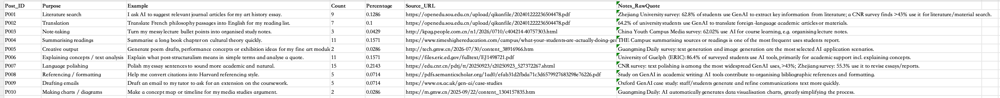

Week 4: Data and Power
In Week 4, lectures unpacked critical perspectives on data and power. I grasped that “raw data” is a misleading idea; datafication turns everyday human experiences into countable units, while classification systems carry hidden power, value judgements and historical biases. The concept of data colonialism helped me see data extraction as a modern extractive practice, not just a neutral technical procedure. These ideas built upon our earlier discussion that mathematical fairness cannot resolve deep‑seated social inequity.
In the group workshop, we completed a feminist data‑planning activity focused on university students’ generative‑AI learning practices. Working collaboratively, we defined research aims, weighed ethical concerns, thought about data gaps and chose suitable online secondary sources. It struck me that bias emerges long before running formal analysis, starting with which variables we select to measure and which realities we leave unrecorded.
Following the module’s critical‑thinking standards, I recognise that simply generating numerical datasets cannot guarantee objective findings. Data collection itself shapes how we understand the world. As our group prepares the spreadsheet dataset for next week’s visualisation task, I will keep questioning power imbalances and missing viewpoints. I plan to document these group‑work insights on my portfolio website as practical evidence of my methodological learning.

Figure 1: Dataset variable and code‑value lookup table

Figure 2: Sample of secondary source dataset

Figure 3: Preview of raw coded dataset